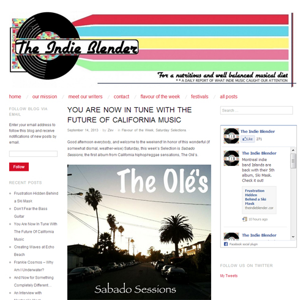

Olé!
Latest News
September 20th, 2013
A HUGE thank you to Aaron Howard for putting together this sick mountain acoustic sesh video. Shot up in the mountains of Santa Barbara, we taped and recorded the song in one take, and then had a little fun with some additional shots. We have plans for many more acoustic sessions to be filmed, so take a look at this first addition!
September 19th, 2013
Wow, it's been a journey this summer! Much development has gone down to prepare for the upcoming year, including spreading our music and making new friends. The website will be back up to speed now, as things are kicking off quickly.
Speaking of making new friends, our new homies Indie Blender Music up in Montreal, Canada came across our music on NoiseTrade.com. They are awesome and gave a great review on our LP, Sabado Sessions, so if you are looking for a good, solid read, here's a link to the artile:

June 9th, 2013
We Remastered one of our beloved, pre-recorded songs "Sabado Tarde"! Take a gander at it, as we enhanced the sound to emulate how we play it at our shows:
May 28th, 2013
Check out this teaser video for the upcoming release of "The Olé's: The Game!"
May 23rd, 2013
Our show on the 17th at AEPI's Save a Child's Heart Fundraiser was awesome! Whipped out some of our new songs that we've been developing, so if you were there to see it, how did you like them? Let us know on our facebook page by clicking the Facebook logo below!
May 15th, 2013
Ever forgotten what address the Olé's are playing at right before the show? Get the Show Dates page right on your iPhone Dock! Head on over to the Show Dates to see how!
May 10th, 2013
Take a gander at our newly released single "Chitty Chitty" on the Music/Videos page! It sounds like nothing you've heard us produce before
May 8th, 2013
We have added lyrics pages for all of our songs! Check them out on the Music/Videos page.